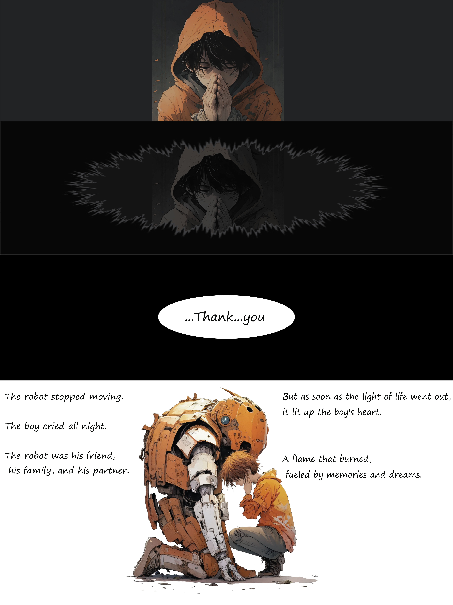
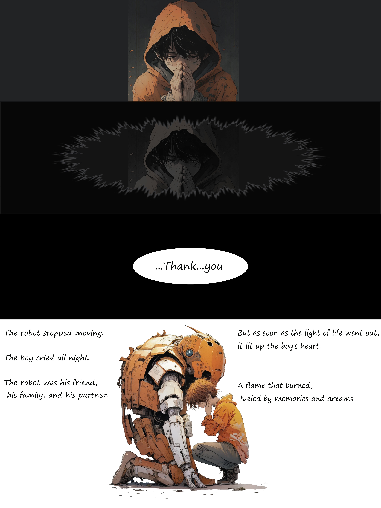

ChatGPT Comic Art
Chat GPT
Midjourney
Can robots be friends of human? Can AI have own personality? If so, is eternal friendship realistic? I believe finiteness is what makes us human.
If ChatGPT creates story and Midjourney creates comics, what do we humanity do? This would be the question that would be asked in the near future.
 
